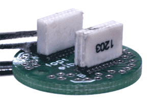
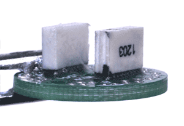

Assemble the EIB
See section on custom parts for details on how to design and order the printed circuit boards (PCBs) for the EIB. If a commercial EIB provided by the maker of your electrophysiology system is used, just clean the EIB with ethanol.
Clean the PCB with ethanol.
Solder the headstage connector to the pads on the EIB.

Clean the flux off the PCB.
Test the connections and check for shorts between traces.
If the PCB design has separate circuits for reference and ground channels, these can optionally be joined either by soldering a short piece of stainless steel wire between the corresponding vias, or by placing a solder bead to short the corresponding SMD pads.

Reinforce the joint of the connector to the EIB with epoxy. Without this step, the solder connection can break after a few connect/disconnect cycles. Be careful to avoid getting any epoxy into the vias, as small amounts can be very hard to spot and can cause connection problems when loading electrodes later.
The EIB is now ready to be glued onto the drive body.